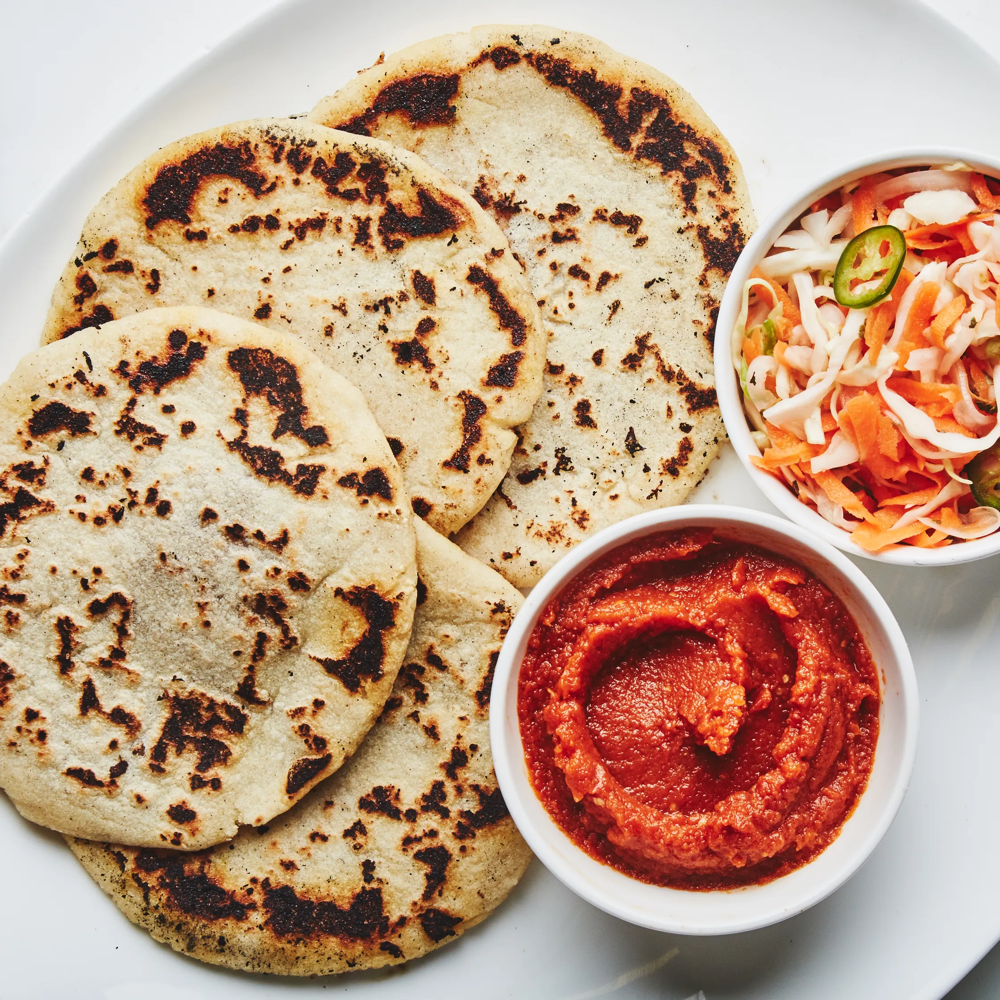

back to recipe home :)
~ pupusas ~

these are some pupusas. wahoo!
~ ingredients ~
- ¼ cup plus ⅓ cup vegetable oil, divided
- ½ medium white onion, halved, broken up into individual layers (petals)
- 1 15-ounce can central american red beans or red kidney beans
- kosher salt
- 3 cups instant corn masa flour (such as maseca instant corn masa mix)
- 4 ounces grated queso oaxaca or salted mozzarella (preferably polly-o; about 1 cup)
- curtido (salvadoran cabbage relish) and salvadoran salsa roja (for serving)
~ preparation ~
- heat ¼ cup oil in a large skillet over medium-high. cook onion, tossing occasionally, until pieces are charred on all sides, 10–12 minutes (oil will smoke and onion will pop, so be careful). don’t stop cooking at “browned,” they need to go further.
- transfer onion to a blender, reserving oil in pan. add beans and their liquid to blender and purée, gradually adding ¼ cup warm water if mixture is too thick and blender is struggling, until smooth.
- heat onion oil over medium. transfer bean mixture to skillet and cook, stirring and scraping bottom of pan occasionally, until mixture is the consistency of thick greek yogurt, 5–10 minutes; season with salt. let cool (refried beans will thicken as they sit, and that’s exactly what you want); set aside.
- using a stand mixer fitted with the paddle attachment, beat masa flour, 3 tsp. salt, and 2⅔ cups hot water on medium speed until dough is very thick and sticky (alternatively, mix in a large bowl about 1 minute). let rest, uncovered, 15 minutes.
- meanwhile, mix cheese and bean mixture in a medium bowl.
- combine remaining ⅓ cup oil and 1 cup warm water in a medium bowl. dip both hands in this mixture and rub your hands together to coat. this will prevent dough from sticking to your hands, and will hydrate dough as you assemble.
- divide dough into 12 balls (about ¼ cup each), keeping them covered with a damp towel so they don’t dry out. with 1 ball in the palm of your hand, use your thumb of the opposite hand to create an indentation in the center. pinch sides to create a well for the filling (it should look like half of a coconut shell). fill hole with 2 Tbsp. bean mixture. pinch dough around filling to enclose (it’s okay if some is poking out), then gently flatten to a 4½–5" disk, dipping your hands in oil-water as needed. repeat with remaining dough and bean mixture (you may have some filling left over).
- cook pupusa in a large cast-iron skillet or griddle over medium heat until center slightly puffs up and pupusa is browned in spots, 3–4 minutes per side. if filling leaks out, simply scrape off pan after pupusa has cooked.
- serve with cabbage relish and salsa roja alongside.